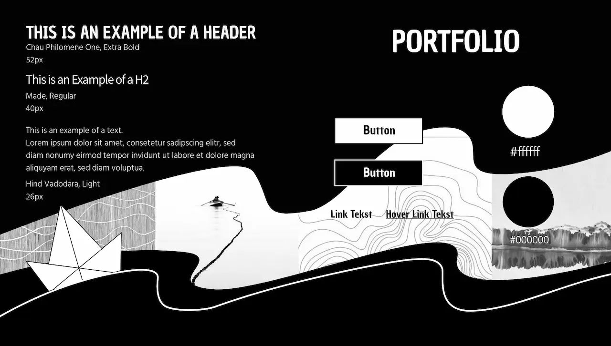

Tema 6 Portfolio eksamen
I tema 6 opgaven skulle jeg implementere al den viden jeg fik i løbet af uddannelsen og lave en portfolio-hjemmeside med alle opgaverne. For at gå i gang med opgaven har jeg lidt tænkt over hvordan det har været for mig at studere i KEA. Jeg ville lave en hjemside, som ville afspejle mig, min rejse. Jeg kom i tanke om en godnat sang, som jeg synger ofte til mig barn. Sangen handler om en dreng som laver en papirbåde og sætter den i en vandpyt og sender båden i rejse hen mod havet. Jeg kan sammen ligne min studie på MMD med bådens rejse. Jeg føler mig lige som en lille papirbåd, som er i en stor rejse mod hav af viden. Selv om den er lille og skrøbelig, så har den nok mode og styrke til at opnå målet. Jeg har valgt en minimalistisk stil i sorte og hvide farver. Portfolio siden ligner en mappe med standpunkter på opgaverne.

Moodboard
Stiletile
Mockup
For at finde inspiration til designet, har jeg lavet et moodboard og en række skitser, wireframe og layoutdiagrammer. Bagefter har jeg lavet en styletile, hvor jeg valgte fonte, button og hover. I mine opgave-sider har jeg valgt at lave simpel layout med tekst og slide-show. Nogle af elementerne har jeg valgt at fremhæve nedrunder og skrive en detaljeret beskrivelse af dem.
For at lave slide-show, har jeg brugt koden fra internettet og implementeret den til min side, derudover er der på nogle af siderne 2 slide-shows og det giver udfordringer med JavaScript, som jeg så løser efterfølgende. Jeg har også lavet en burger-menu på alle siderne og koden for den har, som jeg taget fra en YouTube-tutorial, men har ændret designet, så den passer til hjemmesiden.
Jeg har også lavet 5 sekunders test for at se, hvad andre mennesker forstår om siden. Jeg fik et godt feedback med nogle ideer, som jeg kunne arbejde videre på, fx, at på portfolio siden kunne man lave en animation med papirbåden, hvor den kommer hen mod opgaverne.